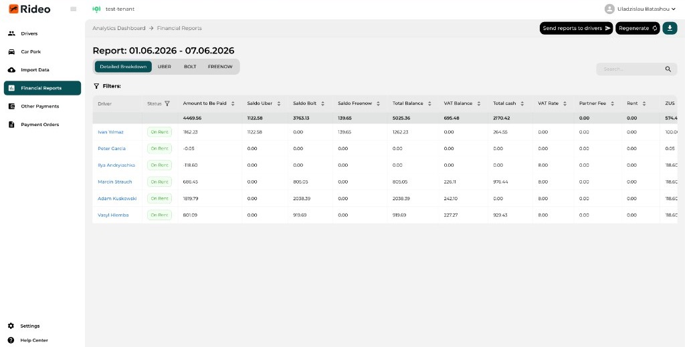
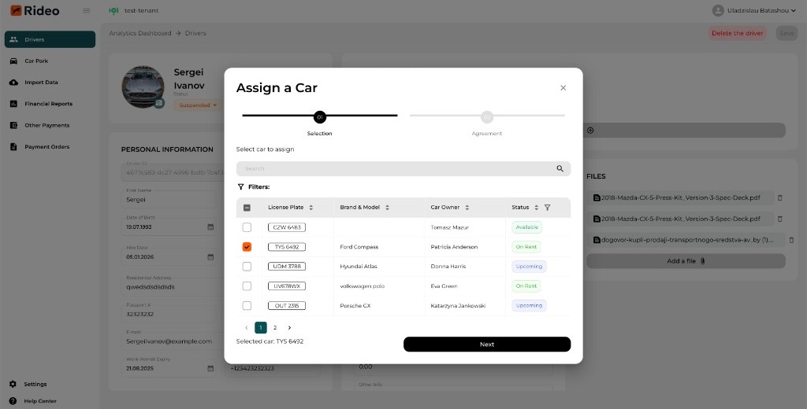
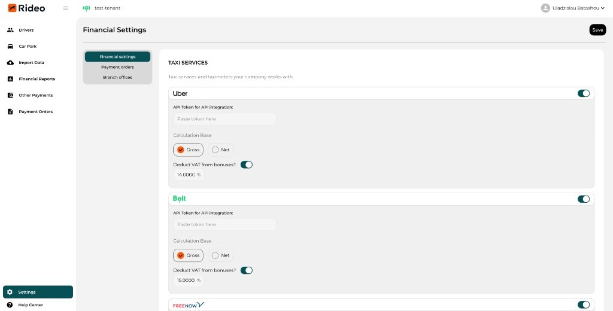
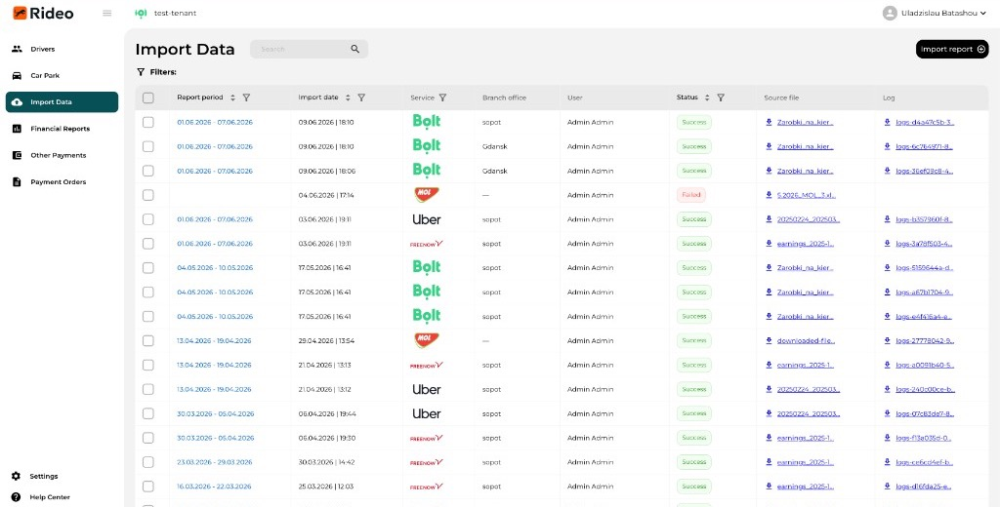
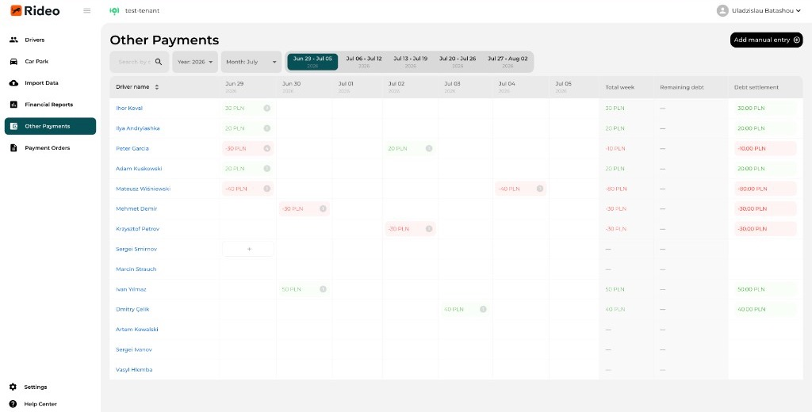
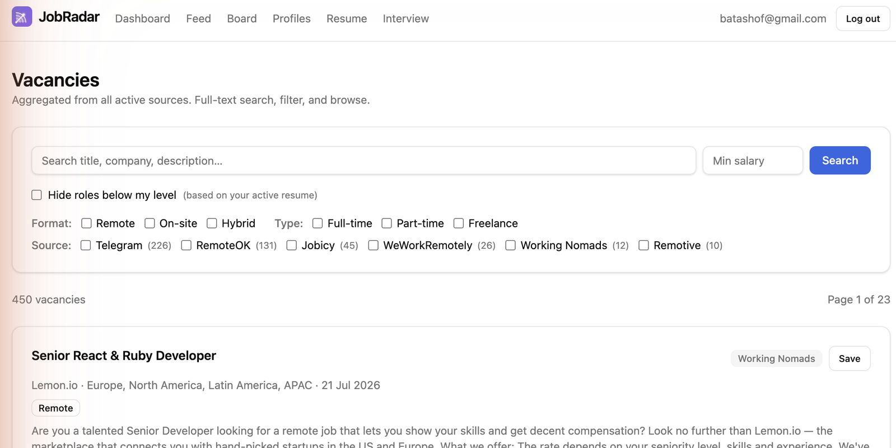
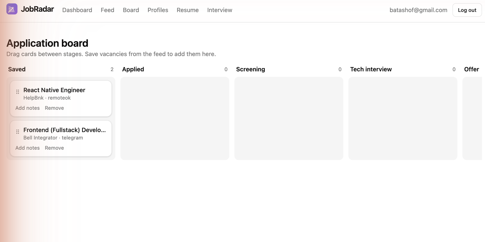
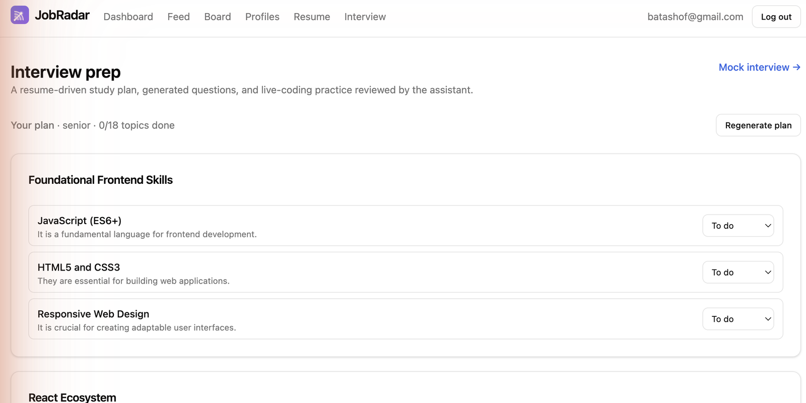

Фронтенд-разработчик, 8 лет на React и TypeScript. Довожу продукт от пустого файла до прода и уверенно веду фронтенд целиком. Ниже — что я сделал и как работаю.
Rideo помогает партнёрам Uber, Bolt и Free Now вести бизнес без таблиц: карточки водителей и документы, назначение авто, топливные карты, выплаты и автоматический расчёт VAT/ZUS. Я единственный фронтендер в небольшой кросс-функциональной команде (бэкенд, дизайнер, QA, product owner) и отвечаю за фронт целиком: архитектуру, фичи, UX и деплой. Работает в проде у launch-партнёра, сейчас продуктизируется под продажу.





Личный full-stack проект, который я сделал целиком сам, чтобы упростить собственный поиск работы. Фоновые воркеры собирают вакансии из 6+ бесплатных источников (Telegram-каналы, RemoteOK, WeWorkRemotely, Remotive, Jobicy, Working Nomads), дедуплицируют их в ленту с фильтрами и полнотекстовым поиском, а drag-and-drop канбан ведёт каждую заявку по воронке. Сверху — AI-слой: матчинг резюме ↔ вакансия, генерация краткого разбора вакансии и сопроводительных писем, а также текстовый mock-интервьюер с письменным отчётом-фидбэком. Фронтенд на Next.js и отдельный API на NestJS, PostgreSQL, очереди на Redis и cron — всё на бесплатных тарифах ($0).



Отвечал за фронтенд-архитектуру на React/Next.js с SSR/ISR и задавал в команде практики кода, тестирования и ревью. Стандартизировал состояние на TanStack Query и Redux Toolkit, поднял производительность (code-splitting, кеширование) и собрал библиотеку компонентов на MUI/Radix с доступностью (WCAG).
Делал фичи на React от и до и модернизировал легаси (модульная структура, строгий TypeScript). Ускорил формы и таблицы через виртуализацию и мемоизацию, выстроил пирамиду тестов, упорядочил CI/CD и добавил базовую безопасность (CSP, XSS/CSRF).
UI на React + Apollo GraphQL для платформы электронных архивов, интернет-магазин с каталогом, корзиной и 3D-превью комнаты, админ-экраны с Laravel API — здесь вырос в сторону чистой архитектуры и общего инструментария.
Выкатываю быстро, но без потери качества: типизированные контракты, разумная пирамида тестов и код-ревью как привычка. Веду свою зону ответственности целиком и плотно работаю с бэкендом, дизайном и QA, превращая требования продукта в задеплоенные фичи. Работаю AI-first в Cursor и Claude Code (agent mode для рефакторингов, скаффолдинга и тестов, с project rules), но читаю и диффаю каждое изменение и опираюсь на TypeScript и тесты, чтобы поймать ошибки модели — архитектурные решения остаются за мной.